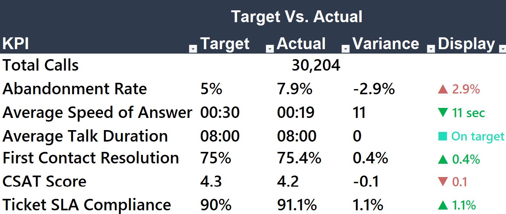
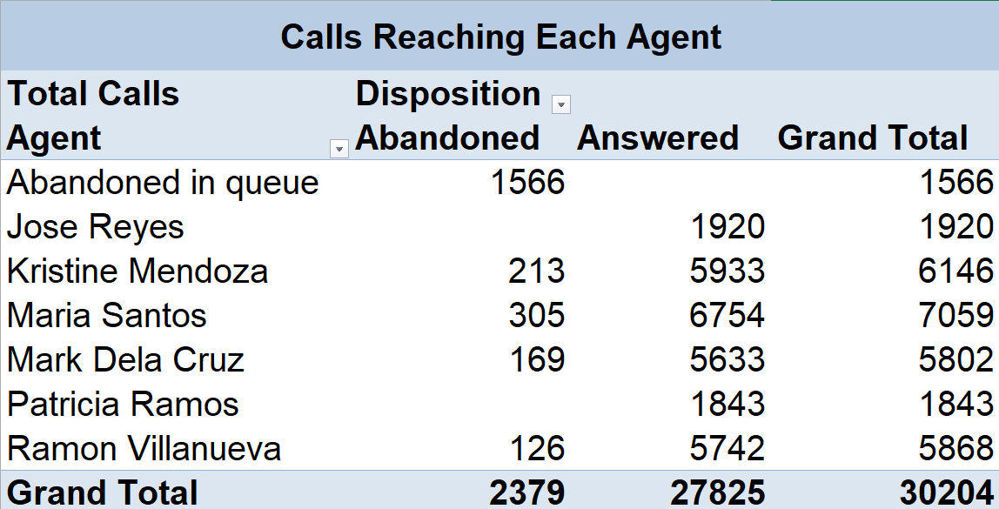
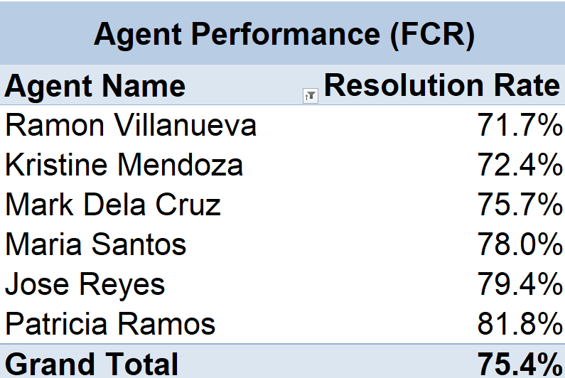
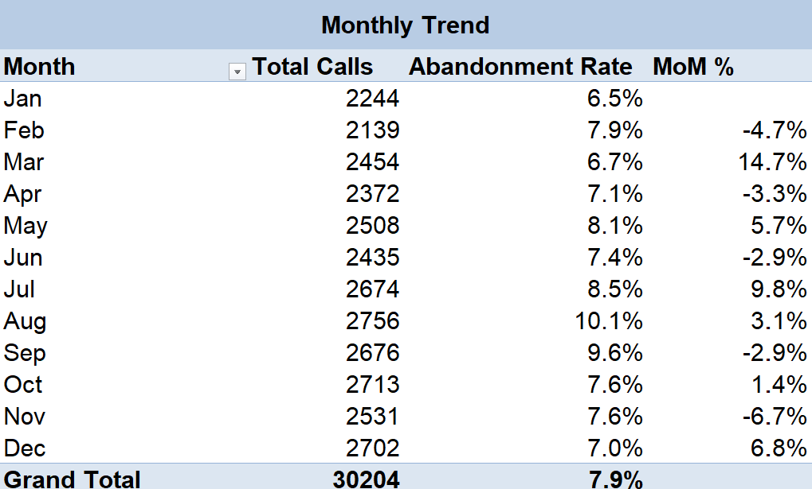
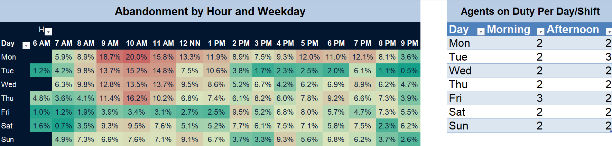
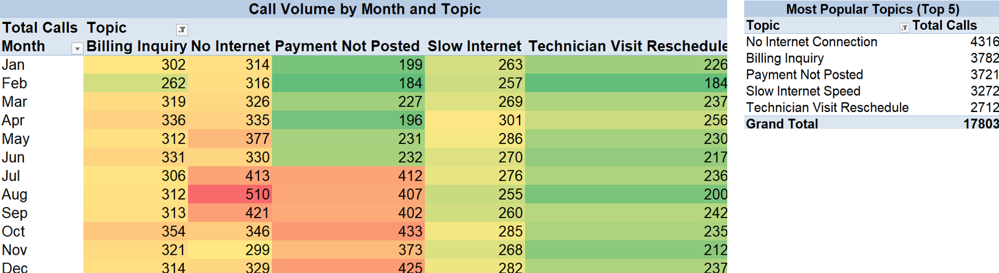
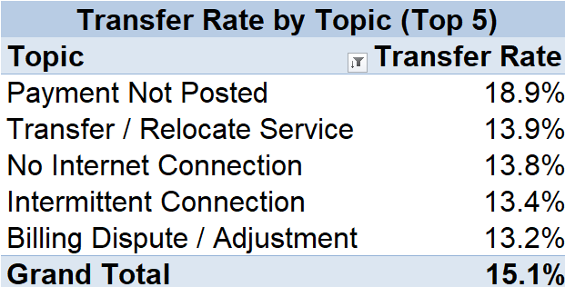
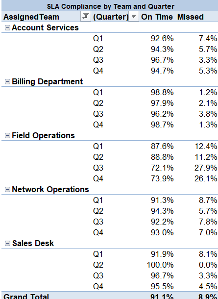
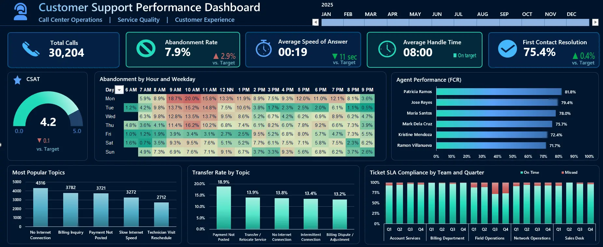

Customer Support Operations Dashboard & Analysis
This project uses Excel functions, PivotTables, and an interactive dashboard, to analyze a year of call center and ticketing data for a broadband provider's support desk, identifying staffing gaps, performance issues, and process breakdowns.
Workflow: Raw Data → Pivot Analysis → Interactive Dashboard → Business Insights & Recommendations
Problem Scenario
NexaNet Broadband runs an inbound phone support desk, open daily from 6am to 10pm across two shifts. Six agents across two teams handle incoming calls, with senior Tier 2 agents taking the more complex technical issues. When a call can't be resolved on the spot, it becomes a follow-up ticket handled by a specialist department, such as field technicians, network operations, or billing.
Management wants to know where the support desk is falling short of its targets, and why, so resources can be prioritized going into the next planning period.
Business Questions
- Is call volume handled consistently throughout the year, or are there periods where the desk struggles to keep up?
- Are staffing levels matched to when calls actually come in, by hour, day, and shift?
- Which agents and teams are meeting their targets, and which aren't?
- What are customers calling about most?
- Are follow-up tickets being resolved within their service targets, and if not, which teams need support?
- How satisfied are customers with the support they received?
Tools Used
| Excel | PivotTables, XLOOKUP, IF, conditional formatting, slicers, and PivotCharts |
| Dataset | Synthetic call center and ticketing dataset built to mirror a real broadband provider's support desk, 30,204 calls and 4,832 tickets across 2025 |
Data Overview
The workbook is built as a relational set of tables.
| Sheet | Rows | Contents |
|---|---|---|
| Calls | 30,204 | One row per inbound call: queue time, answer time, end time, hold/wrap time, resolution outcome, CSAT |
| Agents | 6 | Team, team lead, shift, tier, hire date, weekly rest days |
| Customers | 6,747 | Region, city, plan, monthly fee |
| Issues | 13 | Call topic, category, complexity, target talk time |
| Tickets | 4,832 | Follow-up cases with priority, assigned team, and status |
| Summary_2024 | 12 | Monthly totals for the prior year, used for year-over-year comparison |
| SLA_Policy | 4 | Hours allowed to resolve a ticket of each priority |
| Targets | 9 | Management targets per KPI, and whether higher or lower is better |
Analysis
Overall Call Performance

Abandonment sits at 7.9%, above the 5% target, driven mainly by wait times during peak hours (see Call Volume and Abandonment by Hour and Weekday below).
Calls Reaching Each Agent

Maria Santos and Kristine Mendoza both work the Morning shift, which covers the 9-11am rush and Monday's call surge, the two busiest conditions from the heat map which likely explains why more calls go unanswered at their desks
Agent Performance (First Contact Resolution)

The two Tier 2 agents, Jose Reyes and Patricia Ramos, have the highest resolution rates, which fits their senior role. Among Tier 1 agents, Ramon Villanueva and Kristine Mendoza fall below the 75% target and may need more coaching or support.
Monthly Trend

Abandonment is highest from July to September, peaking in August at 10.1%. This lines up with typhoon season, when network issues likely drive more calls in at once than the team can handle.
Call Volume and Abandonment by Hour and Weekday

Monday 9-11am has both the most calls of the week and the highest abandonment on the heat map. Staffing stays the same most days, 2 agents per shift, and doesn't increase for Monday despite the higher call volume. The schedule doesn't flex with demand, which is likely the real cause of Monday's high abandonment.
Most Popular Topics

No Internet Connection peaks in August, which could be due to typhoon season and a possible regional outage, weather-driven, not a system problem. Billing Inquiry stays flat all year, a good candidate for a self-service fix like a FAQ or online portal. Payment Not Posted doubles starting July and stays high, unlike the August spike, this doesn't recover, pointing to a lasting process or system issue rather than a one-time event.
Transfer Rate by Topic

Payment Not Posted has the highest transfer rate at 18.9%, on top of its call volume more than doubling since July. Together, this suggests front-line agents can't resolve these calls alone and need to hand them off, likely because the underlying billing issue needs a specialist or a system fix, not just a conversation.
Ticket SLA Compliance by Team and Quarter

All other teams stay strong all year, mostly above 90%. Field Operations is the only one dropping to 72-74% in Q3 and Q4. This matches the typhoon-season surge in network calls, Field Operations likely got overloaded and never caught back up.
Dashboard
All of the above is brought together into one filterable dashboard, with KPI cards (each showing target vs. actual), an agent performance chart, a topics breakdown, the abandonment heat map, and ticket SLA compliance by team, all connected to a single Month slicer.

Key Insights and Recommendations
Key Insights
- Field Operations is the biggest problem area. Against a 90% SLA compliance target, every other team stays close to or above it all year, but Field Operations drops from about 88% to 72-74% in Q3 and Q4, a gap wide enough to repeat or worsen next typhoon season if nothing changes.
- Monday mornings are understaffed relative to demand. Staffing stays flat at 2 agents per shift most days, but Monday 9-11am gets the most calls of the week, and abandonment peaks there at up to 20%.
- Payment Not Posted points to an unresolved system issue. Call volume for this topic doubled starting July and never dropped back down, and it also has the highest transfer rate of any topic (18.9%), agents can't resolve it on the call alone.
Recommendations
Add temporary Field Operations capacity during typhoon season (July-September), so ticket backlog doesn't carry into Q4.
Shift one more agent to Monday morning, pulled from a lower-volume day or hour, to match staffing with actual demand.
Investigate the Payment Not Posted system issue directly, since it started suddenly in July and hasn't resolved on its own, this needs a technical fix, not just more agent training.
Note: this dataset is synthetic, built to mirror realistic call center patterns for portfolio purposes, not real NexaNet Broadband data.